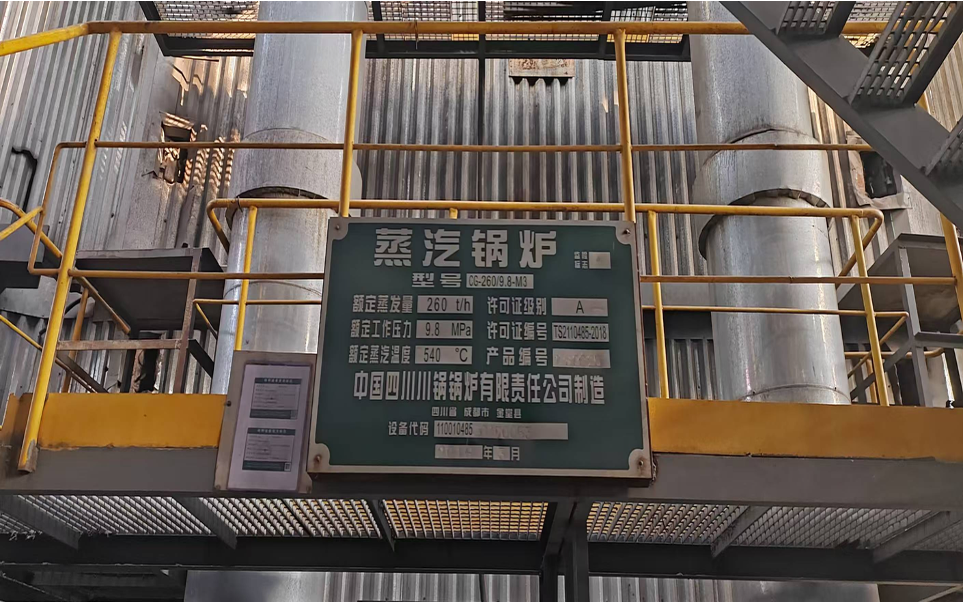
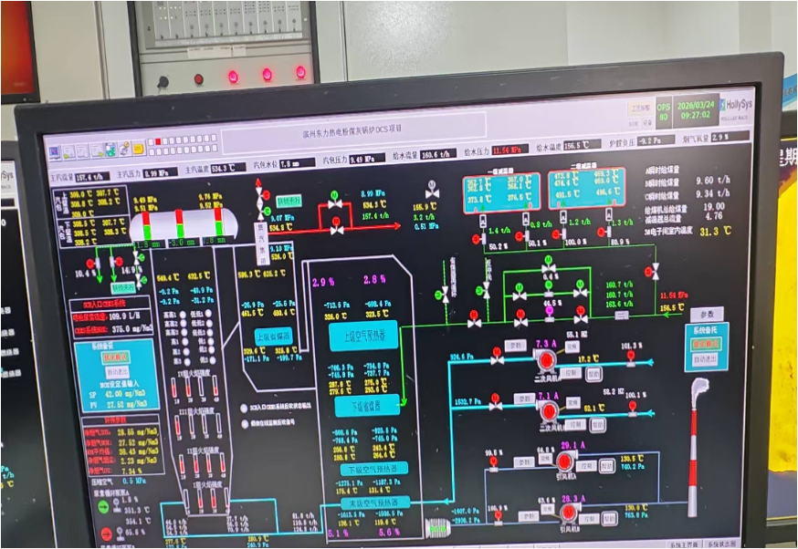
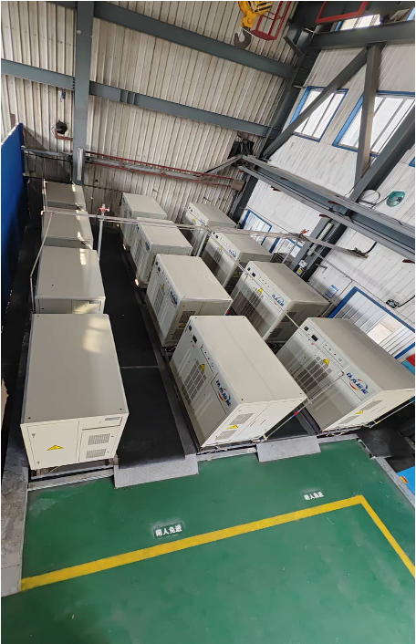
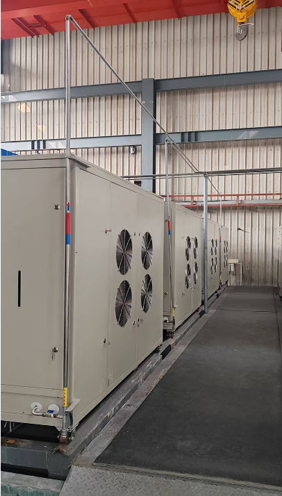
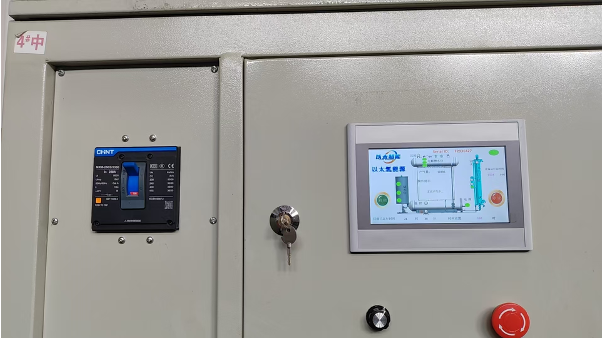
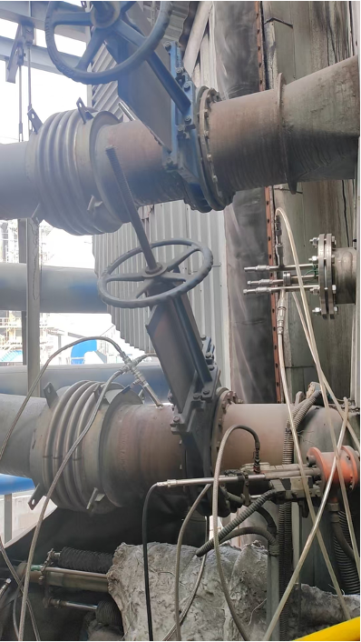
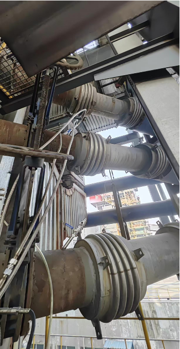
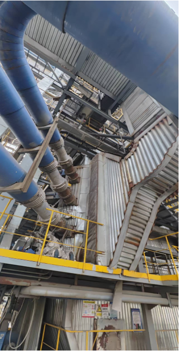
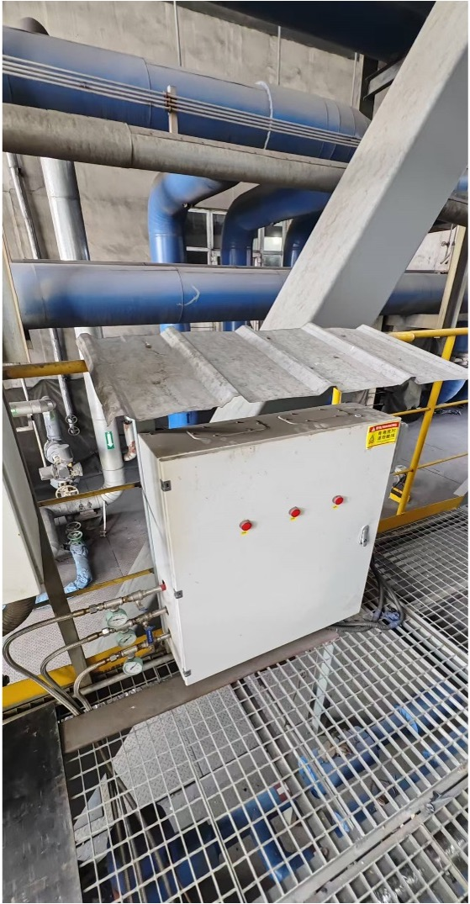

检测资质链
覆盖检测机构资质、检测方法、样品来源、测试边界条件等核心信息，确保结果可追溯、可复核。
SURGY POWER
AUTHENTICATION, IP & CASE STUDY
THIRD-PARTY AUTHENTICATION
覆盖检测机构资质、检测方法、样品来源、测试边界条件等核心信息，确保结果可追溯、可复核。
围绕热值、燃烧特性、安全边界、节能效果等关键指标提供检测结果与结论摘要，形成完整证据闭环。
与工程部署场景衔接，明确检测结论在工业锅炉工况下的适配范围、注意事项与实施条件。
PATENT SHOWCASE
CORE PROCESS
重点展示“碱性磁电法”“催化体系”“反应链路”相关的核心发明或实用新型，突出技术壁垒。
EQUIPMENT DESIGN
展示发生装置结构、阻火与联动保护等设计专利，支撑工程可实施性与运行安全性。
APPLICATION METHOD
展示在不同锅炉类型、不同负荷窗口下的应用方法与调试策略专利，形成场景化复制能力。
DOCUMENT PLACEHOLDER
后续可按“专利号 / 法律状态 / 保护范围 / 关联模块”输出可检索清单，并支持一键跳转原始公示页面。
CLIENT CASE STUDY









CASE CONTEXT
该案例在非理想工况下完成验证：项目现场存在设备原始缺陷、供暖季后降负荷运行、并叠加污泥协同处理任务。即便如此，仍完成多轮运行验证并形成可复制实施路径。